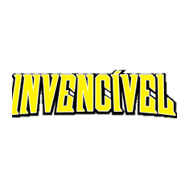

"Invencível" é um herói que personifica coragem e determinação. Criado por Robert Kirkman, ele é o alter ego de Mark Grayson, um adolescente com poderes extraordinários. Inspirado por seu pai, Omni-Man, Mark embarca em uma jornada de autodescoberta e responsabilidade. Sua trajetória é marcada por desafios, sacrifícios e conflitos morais. Ao longo da série em quadrinhos e da adaptação animada, "Invencível" enfrenta inimigos poderosos, protege a Terra e lida com dilemas éticos complexos. Sua história cativa os fãs pela sua profundidade emocional e reviravoltas surpreendentes, estabelecendo-o como um dos grandes ícones dos quadrinhos contemporâneos.
Apresentação do Homem